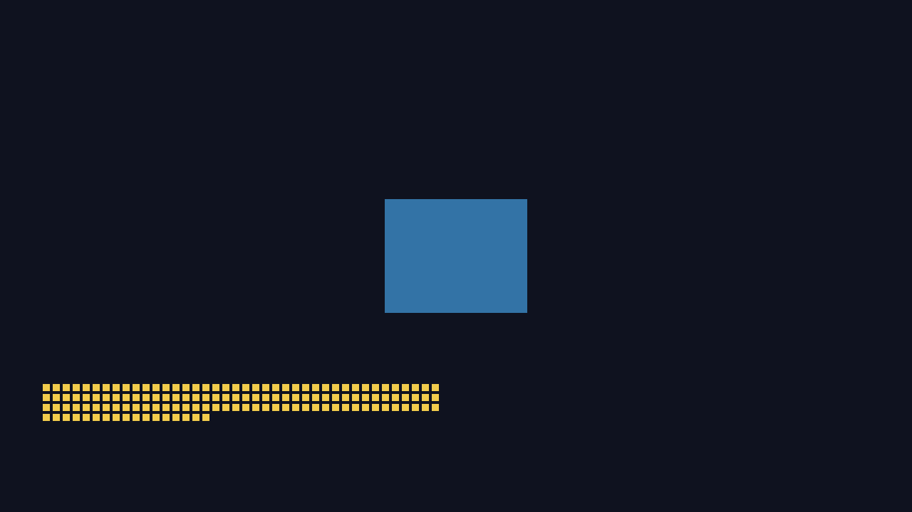
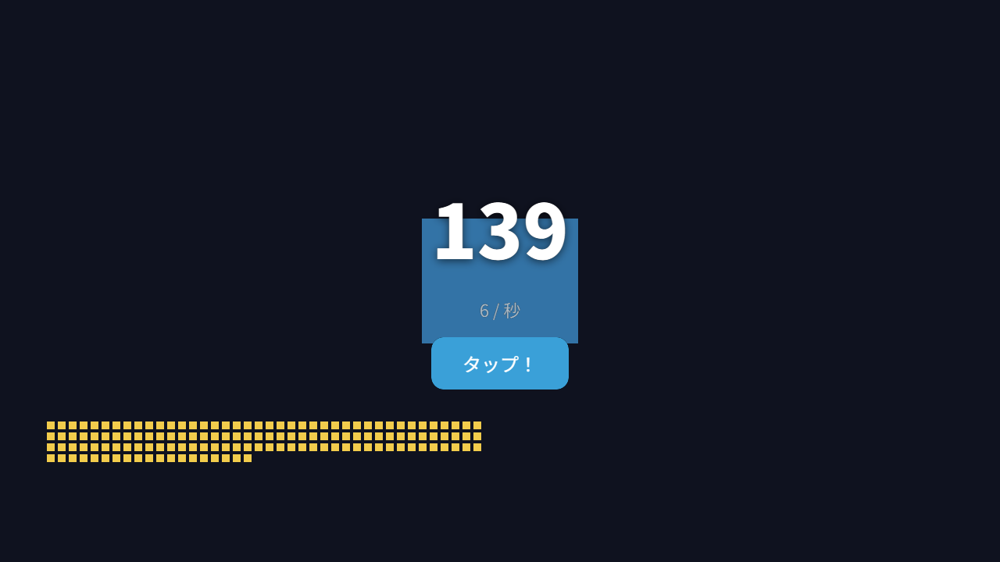

このシリーズの案内役を紹介するにゃん。
時間の目安は 30 分くらい。先に はじめに を済ませて、mitiru doctor が緑になっているのを確認しておいてにゃん。
できあがるもの
- 画面をクリックすると 数字が +1 されるだけのクリッカー
- まずは C++ だけで「クリックした回数ぶん四角が積み上がる」状態にする
- そのあと、HTML/CSS で 大きな数字とボタン をちゃんと表示する
- 最後に C++ を足して「ほっといても少しずつ増える（放置要素）」を入れる
手順 1: プロジェクトを作る
🐈⬛「まずは作業場所を用意するにゃん。ターミナル（PowerShell でも OK）でこう打つにゃ」
mitiru new my-clicker
cd my-clicker
mitiru new は ゲーム DLL のひな型を一式作ってくれるにゃん。mitiru_host（エンジン本体の実行ファイル）が、この DLL を読み込んで動かす、という仕組みだにゃ。
できたフォルダの中で、きみが触るのは基本この 3 つだけ：
| ファイル | 役割 |
|---|---|
src/main.cpp |
ゲームの中身（C++） |
assets/scene.html |
見た目（HTML/CSS） |
mitiru.toml |
設定（ウィンドウサイズ・使うエンジンの版） |
手順 2: とりあえず動かす
mitiru watch
🐈⬛「
mitiru runでも起動できるけど、チュートリアル中はmitiru watchがおすすめにゃん。src/を保存した瞬間に、ゲームを止めずに新しいコードへ差し替わるにゃ。これを『ホットリロード』って呼ぶにゃん。状態（さっきまでの数字とか）も残ったまま入れ替わる、これが MitiruEngine の自慢の機能だにゃ🐾」
初回はエンジンの取り込みとビルドで少し時間がかかるにゃん（数分）。2 回目以降は数秒で立ち上がるにゃ。ウィンドウが出てきたら成功だにゃん。
手順 3: 中身を読む — ゲームは 3 つの部品でできている
src/main.cpp を開くにゃん。MitiruEngine のゲームは、ざっくり 3 つの部品 でできているにゃ。
#include <mitiru/module/Game.hpp>
#include <mitiru/core/Screen.hpp>
struct Clicker
{
// ① 状態（ゲームが覚えておく値）
void update(mitiru::Input in, mitiru::Hud hud, float dt)
{
// ② 毎フレームの処理（入力・ルール）
}
void draw(mitiru::Screen& screen)
{
// ③ 描画（画面に出す）
}
};
MITIRU_GAME(Clicker) // この 1 行で DLL の入口ができる
- ① 状態：
structの中に書いた変数。ここに置いた値だけがホットリロードを越えて生き残るにゃん。 - ②
update：1 フレーム（1/60 秒）ごとに 1 回呼ばれる。キーやマウスを見て、ルールを進めるにゃ。 - ③
draw：画面に四角や色を出すところ。状態を読むだけにしておくのがコツにゃん。
手順 4: C++ だけでクリッカーのループ
🐈にゃー「いよいよ中身を書くにゃん。まだ HTML は使わないにゃ。クリックで数字が増えて、増えたぶん四角が積み上がるところまでを C++ だけで作るにゃん」
src/main.cpp の struct Clicker { ... } を、まるごとこう書き換えてみるにゃん。
struct Clicker
{
// ① 状態
long long count = 0; // クリックした回数
int perClick = 1; // 1 クリックで増える量
// ② 毎フレーム
void update(mitiru::Input in, mitiru::Hud hud, float dt)
{
if (in.pressed(mitiru::Key::Escape)) { hud.quit(); } // ESC で終了
if (in.mousePressed(0)) // 左クリックした瞬間
{
count += perClick;
}
}
// ③ 描画
void draw(mitiru::Screen& screen)
{
screen.clear(sgc::Colorf{0.06f, 0.07f, 0.12f, 1.0f}); // 暗い背景
// 中央に「クリックの的」になる四角（まだただの飾り）
screen.drawRect(sgc::Rectf{540.0f, 280.0f, 200.0f, 160.0f},
sgc::Colorf{0.20f, 0.45f, 0.65f, 1.0f});
// count のぶんだけ小さい四角を下に積む（最大 200 個）
const long long shown = count < 200 ? count : 200;
for (long long i = 0; i < shown; ++i)
{
const float x = 60.0f + static_cast<float>(i % 40) * 14.0f;
const float y = 540.0f + static_cast<float>(i / 40) * 14.0f;
screen.drawRect(sgc::Rectf{x, y, 10.0f, 10.0f},
sgc::Colorf{0.95f, 0.80f, 0.30f, 1.0f});
}
}
};
保存すると、mitiru watch が走っていれば一瞬でリロードされるにゃん。画面をクリックして、黄色い四角が増えていけば成功だにゃ🐾

screen.clear() の色、青い四角と黄色い四角は drawRect()。まだ文字は無い。手順 5: ホットリロードを体感する
🐈⬛「ここで MitiruEngine のうれしさを味わうにゃん。
mitiru watchは止めずに、さっきのperClickの= 1を= 5に変えて保存してみるにゃ」
int perClick = 5; // 1 → 5 に変えて保存
ゲームは落ちずに、次のクリックから +5 になるにゃん。しかも今まで貯めた count はそのまま残っているはずにゃ。これは状態（struct の中身）を host 側が握っていて、コードだけ差し替えているからにゃん。普通のエンジンだと作り直し→再起動になりがちなところを、MitiruEngine は止めずにやれるにゃ🐾
確認できたら perClick は 1 に戻しておくにゃん。
手順 6: 見た目を HTML/CSS に載せ替える
🐈にゃー「四角を積むのは雰囲気は出たけど、クリッカーなら大きな数字がほしいにゃん。文字や UI は HTML/CSS の得意分野だから、ここからは見た目を HTML に引っ越すにゃ。しかも手書きの JavaScript はゼロでいけるにゃん」
仕組みはこうにゃん：
- C++ 側は毎フレーム「
countはこの値だよ」と 名前つきで HTML に渡すだけ - HTML 側は「ここに
countを出して」と 印（data-m-text）を書くだけ - あいだの配線はエンジン同梱の
mitiru_bind.jsが全部やる（きみは JS を書かない）
6-1. C++ から数字を渡す
update の最後に、1 行足すにゃん。
void update(mitiru::Input in, mitiru::Hud hud, float dt)
{
if (in.pressed(mitiru::Key::Escape)) { hud.quit(); }
if (in.mousePressed(0)) { count += perClick; }
hud.set("view.hud.count", static_cast<int>(count)); // ← HTML へ渡す
}
hud.set("view.hud.count", ...) は「view.hud.count という名前で、この数を HTML に届けて」という意味にゃん。
6-2. HTML に表示の印を書く
assets/scene.html の <body> を、こう書き換えるにゃん。
<body>
<div class="clicker">
<div class="count" data-m-text="view.hud.count">0</div>
<button class="tap" data-m-action="game.tap">タップ！</button>
</div>
<!-- この 2 行が C++↔HTML の配線。手書き JS は無し -->
<script src="mitiru_runtime/mitiru_cef_state.js"></script>
<script src="mitiru_runtime/mitiru_bind.js"></script>
</body>
data-m-text="view.hud.count"… ここに、C++ が送ったview.hud.countの値が自動で入るにゃん。data-m-action="game.tap"… このボタンを押すと、C++ に「game.tapっていうアクションが来たよ」と伝わるにゃ。
少し CSS で見た目を整えるにゃん（<style> の中に追記）：
.clicker {
position: absolute; inset: 0;
display: flex; flex-direction: column;
align-items: center; justify-content: center;
gap: 24px;
}
.count { font-size: 96px; font-weight: 800; text-shadow: 0 2px 12px rgba(0,0,0,.6); }
.tap {
font-size: 24px; padding: 16px 40px; border: none; border-radius: 16px;
background: #3aa0d8; color: #fff; cursor: pointer;
pointer-events: auto; /* ボタンはクリックを受け取る */
}
6-3. ボタンのクリックを C++ で受ける
画面どこでもクリック、に加えて HTML ボタン経由でも増やせるようにするにゃん。update をこう：
if (in.mousePressed(0) || in.action("game.tap")) // ← どちらでも +1
{
count += perClick;
}
保存してリロード。大きな数字が真ん中に出て、「タップ！」ボタンでも画面クリックでも増えれば、見た目づくりは完成だにゃん🎉

data-m-text / data-m-action）。C++ が数えた値が手書き JS ゼロで反映される。下に透けている四角は C++ の描画層で、HTML がその上に重なって合成されている。🐈⬛「これがきみの言う『CEF で見た目を作る』ところまでにゃん。C++ は数を数えるだけ、見た目は HTML、配線は
data-m-*。役割がきれいに分かれてるにゃ🐾」
手順 7: C++ を足して『放置ゲーム』にする
🐈にゃー「見た目ができたら、あとは C++ を足してゲームを良くしていくにゃん。クリッカーの定番、ほっといても増えるを入れるにゃ」
状態に「毎秒増える量」を足して、update で時間ぶん加算するにゃん。
long long count = 0;
int perClick = 1;
float perSec = 2.0f; // 毎秒これだけ増える（放置要素）
float carry = 0.0f; // 端数を貯めておく入れもの
void update(mitiru::Input in, mitiru::Hud hud, float dt)
{
if (in.pressed(mitiru::Key::Escape)) { hud.quit(); }
if (in.mousePressed(0) || in.action("game.tap")) { count += perClick; }
// 経過時間ぶん、ちょっとずつ増やす
carry += perSec * dt;
while (carry >= 1.0f) { count += 1; carry -= 1.0f; }
hud.set("view.hud.count", static_cast<int>(count));
hud.set("view.hud.perSec", static_cast<int>(perSec));
}
HTML に「毎秒 +N」表示も足すにゃん：
<div class="rate"><span data-m-text="view.hud.perSec">0</span> / 秒</div>
これでもう立派なクリッカーにゃん。ここから先は、きみのアイデアしだいにゃ：
- ボタンを押すたび
perSecが増える「アップグレード」をdata-m-actionで追加 countが一定を超えたら背景色を変える（drawで分岐）- セーブ／ロードを足して、閉じても続きから（→ これは別レッスンで扱うにゃん）
ちょっと寄り道: 独立ウィンドウで中身をのぞく
🐈⬛「最後に MitiruEngine らしい小ネタを 1 つにゃん。ゲームを止めずに状態をのぞく窓を開けるにゃ」
mitiru run --inspect
別ウィンドウが開いて、count がリアルタイムで動くのが見えるにゃん。MitiruEngine は「必要なものだけ別の窓に出す」考え方で、巨大なエディタを開かなくていいのが特徴だにゃ。この独立ウィンドウたちは、後のレッスンでもっと活躍するにゃん🐾
まとめ
このレッスンでできるようになったこと：
mitiru new→mitiru watchでプロジェクトを立ち上げて育てるupdate／draw／状態（struct）というゲームの 3 部品- C++ でループ → HTML/CSS で見た目（手書き JS なし、
data-m-*）→ C++ で味付け の流れ - ホットリロードで止めずに育てる感覚
🐈にゃー「おつかれさまにゃん！ これが MitiruEngine の基本の呼吸だにゃ。次のレッスンは少し見た目が難しくなるノベル／アドベンチャー。テキスト窓と立ち絵と選択肢を HTML で組むにゃん。またボクが案内するにゃ🐾」